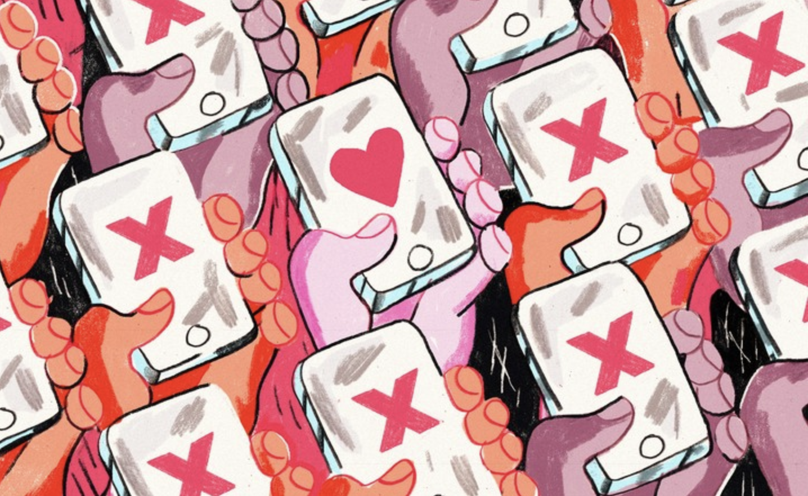
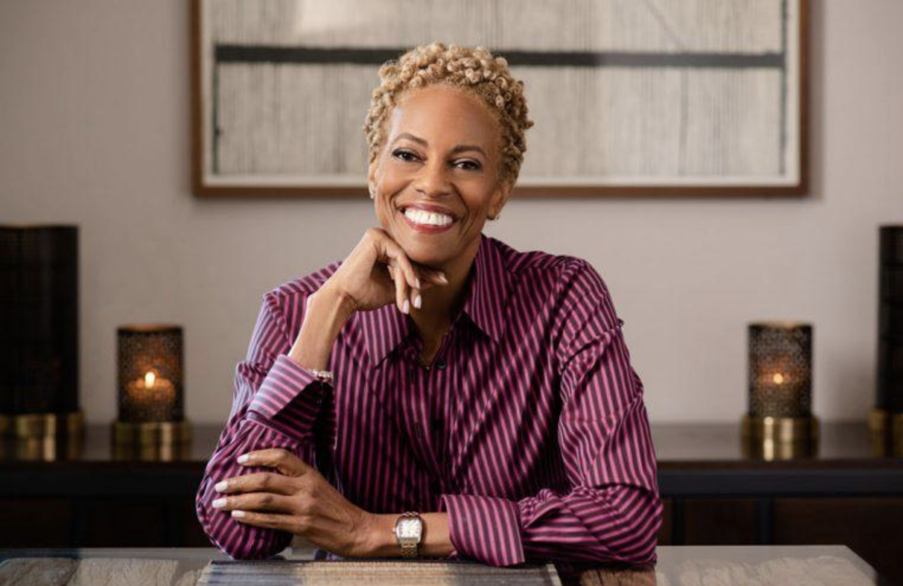

Miltimodal Redesign
Descrimination in Online Dating
Online dating has by orders of magnitude increased the possible dating pool for individuals globally. The contemporary phenomenon of dating apps such as OkCupid, Gridr, Tindr, and many others has brought the possibility of optimization in the process of seeking a partner. However, this phenomenon has highlighted social patterns at play such as racial and gender discrimination. This essay will discuss what form discriminatory practices have taken on these platforms and what solutions can be employed by developers and users alike.
Exploration of this topic originated in the readings found in Algorithms of Oppression where author Safiya Umaja Noble discusses (among other things) the origins and impacts of problematic results generated by search engines when searching the term “black girls.” It recalled stereotyped fetishization of specific groups and what social impacts dating platforms can have on such memes.
In the scholarly article The filtered encounter: online dating and the problem of filtering through excessive information, researchers Kirsty Best and Sharon Delmege explore filtering techniques employed by platforms and users to comprehend and utilized the masses on information available. How Sexual Racism and Other Discriminatory Behaviors are Rationalized in Online Dating Apps by Christopher T. Conners sheds light on why and how such filtrations have come to be utilized by both platform and user.
These ideas are supported by Ashley Brown NPR article 'Least Desirable'? How Racial Discrimination Plays Out In Online Dating and in Lester Fabiam Brathwaite’s Rolling Stone article Why Dating Apps Are Racist AF — With or Without Ethnicity Filters
In researching these topics, it is important to note the solutions to these problems be brought. Cornell Bowers College of Computing and Information Science published the article Redesign Dating Apps To Lessen Racial Bias, Study Recommends, outlining design driven solutions. Additionally, Vernā Myers’ TED talk How to overcome our biases? Walk boldly toward them offers not only the solution of boldly recognizing and overcoming racial biases, but also addresses a grander point, beyond the harm of discrimination in dating practices, that these biases are the underlying causes of violence and death in these marginalized groups.

The literature suggests that in attempting to filter through large amounts of data, the patterns of discrimination in society become quantitative. Black people of all genders combined are 10 times more likely to message white people than white people are to message black people. These numbers run reinforce notions of racial biases in other categories of society such as what group would be more likely to be hired for a position.
The question, as posed in Noble’s book remains: is it the fault of the prejudices of developers or the influence of users on algorithms? To answer the discussion oulines types of discrimination taking place on these platforms.
Discrimination takes place in a variety of formats in online dating. Online dating algorithms often rely on user preferences and demographic information to match people with potential partners. However, these preferences can be shaped by racial biases and stereotypes, leading to a situation where people of color are often excluded from romantic and sexual opportunities. For example, studies have shown that users of online dating platforms are less likely to express interest in people of other races, and that Asian men and black women are often the least desirable groups on these platforms. How is such discrimination justified?
Justification for discriminatory behavior in online dating can be based on perceived social norms or expectations, as discussed in the works of Kristy, Delmerge and Conners. In some cases, individuals may feel pressure to conform to certain ideals or standards of attractiveness, which may be influenced by media representations or cultural stereotypes. This can lead to the exclusion of certain groups or individuals who are not seen as fitting these norms or standards. Because whiteness has tested as a “status quo” among diverse groups, many marginalized are likely to operate from a white-favored bias as well. Additionally, discriminatory behavior in online dating can be rationalized through the use of implicit biases, which are unconscious attitudes or beliefs that can influence our behavior without our awareness. For example, someone may hold negative stereotypes about certain racial or ethnic groups, which can influence their choices and preferences in online dating without them realizing it. These negative biases can be enacted on one’s own in-group.
It is important to challenge these justifications and work to address the underlying attitudes and beliefs that contribute to discriminatory behavior. This can involve education and awareness-raising about the harmful impacts of discrimination, as well as efforts to promote greater understanding and appreciation for diversity and cultural difference. The most important step in all of this is the ability to acknowledge the existence of the bias in the first place, with minimal guilt.
It is also important to hold online dating platforms and other technology companies accountable for promoting inclusivity and combating discrimination. This can involve the development of policies and guidelines that promote diversity and inclusion, as well as the use of technology tools and algorithms that are designed to reduce bias and promote fairness. A pervasive problem in the tech industry is lack of diversity among developers. Should more people of color be at the table for those initial stages of app development, more perspectives would be included inherently.
In conclusion, online dating platforms and their algorithms can be held responsible for their design. When design reinforces harmful patterns through society, it is up to developers to seek solutions to challenge pervasive biases. Users are responsible to then challenge the biases within themselves. The video below offers advice on how to approach this, and what, beyond discriminatory dating practices, is at stake.
Citation
Best, K. & Delmege, S.(2012)The filtered encounter: online dating and the problem offiltering through excessive information, Social Semiotics,22:3,237-258,DOI: 10.1080/10350330.2011.648405
Brown, A. (2018, January 9). 'least desirable'? how racial discrimination plays out in online dating. NPR. https://www.npr.org/2018/01/09/575352051/least-desirable-how-racial-discrimination-plays-out-in-online-dating
Brathwaite, L. F. (2020, August 21). Why dating apps are racist af -- with or without ethnicity filters. Rolling Stone. https://www.rollingstone.com/culture/culture-features/dating-apps-grindr-ethnicity-filters-1047047/
Conner, Christopher T.(2023)How Sexual Racism and Other Discriminatory Behaviors are Rationalized in Online Dating Apps,Deviant Behavior,44:1,126-142, DOI: 10.1080/01639625.2021.2019566
Myers, V. (n.d.). How to Over Our Biases? Walk Boldly Toward Them . Vernā Myers: How to overcome our biases? Walk boldly toward them | TED Talk. TED. https://www.ted.com/talks/verna_myers_how_to_overcome_our_biases_walk_boldly_toward_them.
Noble, S. U. (2018). Algorithms of oppression: How search engines reinforce racism. New York University Press.
Redesign dating apps to lessen racial bias, study recommends. Cornell University. (n.d.). Retrieved from https://cis.cornell.edu/redesign-dating-apps-lessen-racial-bias-study-recommends
For more helpful videos on diversity, visity this site.